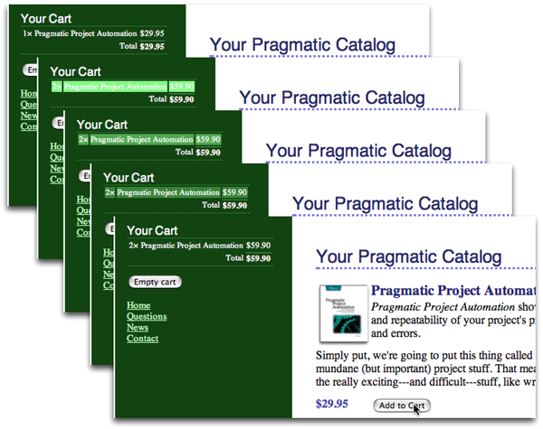

A number of JavaScript libraries are included with Rails. On of those libraries, namely jQuery UI[29], lets you decorate your web pages with a number of visually interesting effects. One of these effects is the (now) infamous Yellow Fade Technique. This highlights an element in a browser: by default it flashes the background yellow and then gradually fades it back to white. We can see the Yellow Fade Technique being applied to our cart in Figure 20, Our cart with the Yellow Fade Technique; the image at the back shows the original cart. The user clicks the Add to Cart button, and the count updates to 2 as the line flares brighter. It then fades back to the background color over a short period of time.
|  |
|
Figure 20. Our cart with the Yellow Fade Technique |
Including the jQuery UI library is simple enough. Simply add one line to app/assets/javascripts/application.js.
| rails31/depot_m/app/assets/javascripts/application.js | |
// Add new JavaScript/Coffee code in separate files in this directory and |
|
// they'll automatically be included in the compiled file accessible from |
|
// http://example.com/assets/application.js It's not advisable to add code |
|
// directly here, but if you do, it'll appear at the bottom of the the |
|
// compiled file. |
|
// |
|
//= require jquery |
|
| * | //= require jquery-ui |
//= require jquery_ujs |
|
//= require_tree . |
|
We saw assets/javascripts/application.js before here. This file behaves similarly, just for JavaScripts instead of stylesheets. Be careful to use a dash instead of an underscore in this line, as clearly not all authors of libraries follow the same naming conventions.
Let’s use this library to add this kind of highlight to our cart. Whenever an item in the cart is updated (either when it is added or when we change the quantity), let’s flash its background. That will make it clearer to our users that something has changed, even though the whole page hasn’t been refreshed.
The first problem we have is identifying the most recently updated item in the cart. Right now, each item is simply a <tr> element. We need to find a way to flag the most recently changed one. The work starts in the LineItemsController. Let’s pass the current line item down to the template by assigning it to an instance variable:
| rails31/depot_m/app/controllers/line_items_controller.rb | |
def create |
|
@cart = current_cart |
|
product = Product.find(params[:product_id]) |
|
@line_item = @cart.add_product(product.id) |
|
respond_to do |format| |
|
if @line_item.save |
|
format.html { redirect_to store_url } |
|
| * | format.js { @current_item = @line_item } |
format.json { render json: @line_item, |
|
status: :created, location: @line_item } |
|
else |
|
format.html { render action: "new" } |
|
format.json { render json: @line_item.errors, |
|
status: :unprocessable_entity } |
|
end |
|
end |
|
end |
|
In the _line_item.html.erb partial, we then check to see whether the item we’re rendering is the one that just changed. If so, we tag it with an id of current_item:
| rails31/depot_m/app/views/line_items/_line_item.html.erb | |
| * | <% if line_item == @current_item %> |
| * | <tr id="current_item" > |
| * | <% else %> |
| * | <tr> |
| * | <% end %> |
<td><%= line_item.quantity %>×</td> |
|
<td><%= line_item.product.title %></td> |
|
<td class="item_price" ><%= number_to_currency(line_item.total_price) %></td> |
|
</tr> |
|
As a result of these two minor changes, the <tr> element of the most recently changed item in the cart will be tagged with id="current_item". Now we just need to tell the JavaScript to change the background color to one that will catch the eye, and then to gradually change it back.
We do this in the existing create.js.erb template:
| rails31/depot_m/app/views/line_items/create.js.erb | |
$('#cart').html("<%=j render @cart %>"); |
|
| * | |
| * | $('#current_item').css({'background-color':'#88ff88'}). |
| * | animate({'background-color':'#114411'}, 1000); |
See how we identified the browser element that we wanted to apply the effect to by passing ’#current_item’ to the $ function? We then called css to set the initial background color and followed up with a call to the animate method to transition back to the original color used by our layout over a period of 1000 milliseconds, more commonly known as one second.
With that change in place, click any Add to Cart button and you’ll see that the changed item in the cart glows a light green before fading back to merge with the background.